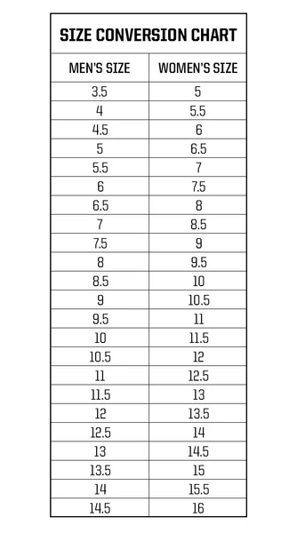

Clothing Size Conversion Charts
Shoes
Tops (Shirts, Blouses, Jackets)
General Rule:
In general, men's sizes run larger than women's. To convert a men's shirt size to a women's size, subtract about 1.5 to 2 sizes. For example, if you typically wear a men's size Medium, you would likely fit into a women's size Large.
Men's XS = Women's S
Men's S = Women's M
Men's M = Women's L
Men's L = Women's XL
Pants (Jeans, Trousers)
General Rule:
The most noticeable difference between men's and women's pants sizes is how they are measured. Men's pants are typically labeled by waist size and inseam (length) (e.g., 32×32), while women's sizes follow a number system (e.g., 8, 10, 12). To convert men's waist sizes to women's, subtract roughly 21 inches. For instance, a men's size 32 waist would roughly correspond to a women's size 10.
Men's 30 waist = Women's 8
Men's 32 waist = Women's 10
Men's 34 waist = Women's 12
Men's 36 waist = Women's 14
Underwear
General Rule:
women's underwear:
Hip Measurement 32-34 inches: Opt for a size 5 panty.
Hip Measurement 35-37 inches: Choose size 6.
Hip Measurement 38-40 inches: Go with size 7.
Hip Measurement 41-42 inches: Select size 8.
Hip Measurement 43-44 inches: Size 9 is recommended.
Hip Measurement 45-46 inches: Size 10 will be the best fit.
Men's underwear

More Resources
A list of more charts and measuring tips